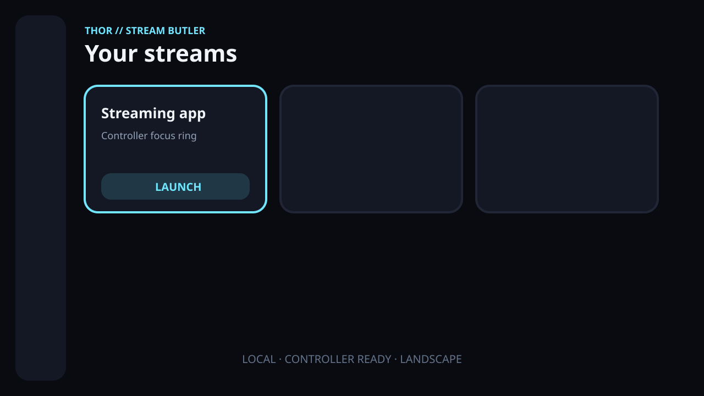

LAUNCHER
Controller-first dashboard
Sortable tiles with persistent focus, linked local hosts, per-app streaming profiles, local icons, and safe launch checks.
One game-streaming launcher for Android handhelds that does more than open apps — it checks whether your network is ready first.

From cloud-gaming services to your own Sunshine host: large tiles, clear states, and full control with a controller, D-pad, keyboard, or touch.
Sortable tiles with persistent focus, linked local hosts, per-app streaming profiles, local icons, and safe launch checks.
Latency, jitter, packet loss, DNS, Wi-Fi signal, VPN detection, and host reachability — not just one speed-test number.
Find compatible Sunshine hosts on demand, store them locally, test TCP ports, and send Wake-on-LAN magic packets.
Filter the latest 100 local measurements, review averages and a latency sparkline, and compare only matching network contexts.
This connection is very well suited for game streaming.
Thor Stream Butler evaluates the factors you actually feel during a gaming session — with transparent reasoning and practical recommendations.
Launch immediately. The connection is ready.
Usable. The app explains what may affect play.
Retest, cancel, or make a conscious launch decision.
Android or the network cannot provide a reliable value.
Use a controller, D-pad, keyboard, or touch.
Run a short test without an unnecessary download.
Clear color, explanation, and recommendation.
Launch automatically or make your own decision.
A deliberately focused MVP with clean package boundaries, testable domain logic, and local persistence — ready for later modularization.
Separate recommendations and saved profiles for Ethernet and Wi-Fi environments.
Timer, battery, and temperature monitoring during a streaming session.
A controller mapping test, widgets, and a Quick Settings tile.
Optional local NAS backups and a Windows companion service.
Thor Stream Butler is developed without advertising, tracking, or telemetry. If the project helps you and you would like to say thanks voluntarily, you can buy me a coffee.
Built in the same local-first, handheld-first spirit as Thor ROM Butler.
Download the VPN-aware, bilingual (EN/DE), debug-signed v0.3.0-alpha.1 preview, or explore the source, architecture, and roadmap.